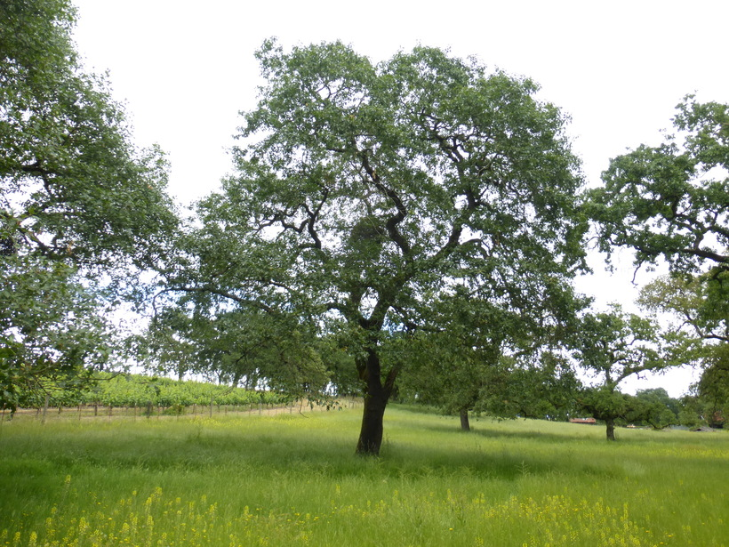
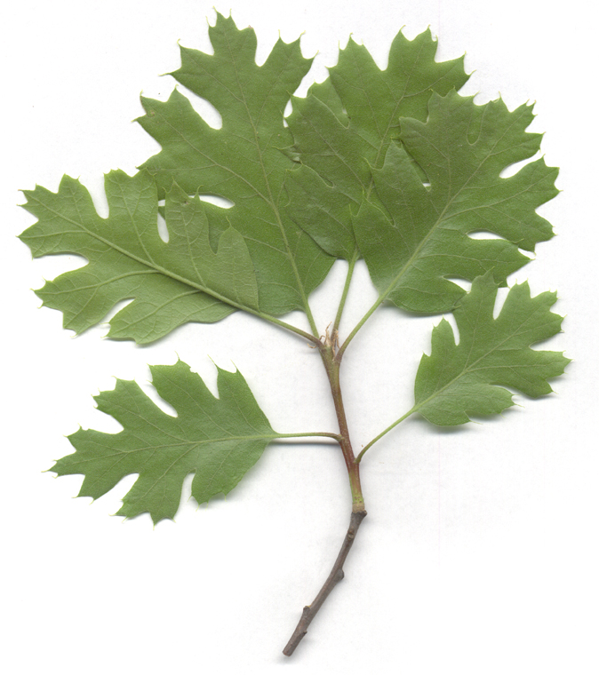
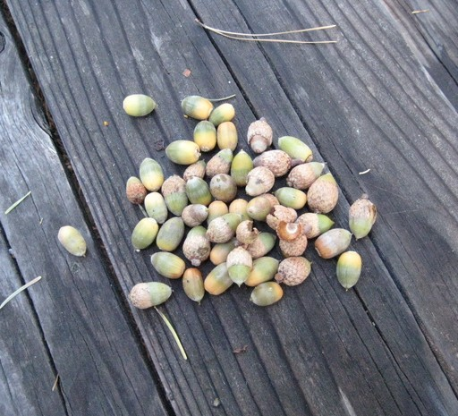

Hámsɨ
Black Oak (Quercus kelloggii)
- Hámsɨ typically live 100-200 years, but some trees live as long as 500 years.
- You can identify hámsɨ by its deeply-lobed leaves, which divide into 5-7 lobes, and by its thick, black bark which is the source of its English name "black oak".

Black Oak (photo by Zoya Akulova, CC BY-NC 3.0)

Black Oak leaves (photo by Julie Kierstead, CC BY-NC 3.0)

❮
❯
Black Oak acorns (photo by Julie Kierstead, CC BY-NC 3.0)
- Speakers of different Nisenan dialects call black oak by different names. In the Valley dialect, it is called hámsɨ. In the Southern Hill dialect, it is called pahá. The Matriarchs of the SSBMI Community spoke these dialects.
Pahá
Black Oak (Quercus kelloggii)
- Hámsɨ typically grows at higher elevations than do other oak species like pikí (blue oak) and pallá (valley oak). However, in some places, like the Rancheria, all three of these kinds of oak trees overlap in their range.
- The uutí (acorns) of hámsɨ are the most prized of all oak trees. Nisenan people from the valley would trade with people from the mountains for hámsɨ.
Uutí
Acorn
Homodíbe mɨɨm? (Where is it?) You can find hámsɨ growing in the arbor area and behind the Tribal Admin building. Look for its blackish bark.
Esak’ahá daak’ábe mi c’aykɨ́ɨ? (Do you want to know more?) This webpage is part of a larger initiative to share signage highlighting plants found around the Shingle Springs Rancheria and their Nisenan names.
Webpage last updated: 2025-09-18